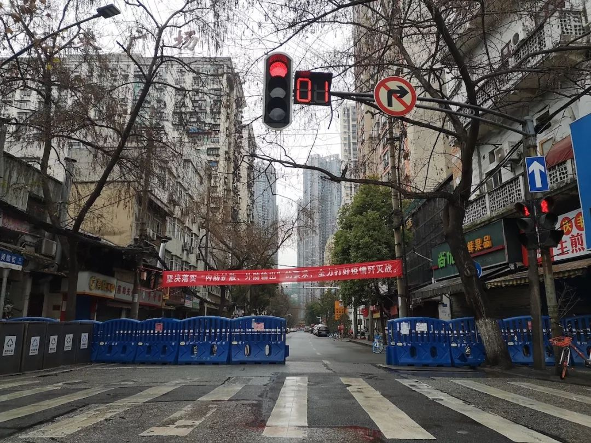

中国疾控中心原副主任：反思此疫，中国疾控该改革了 | 独家专访
原文链接 备份链接 作为中国疾控中心原副主任，杨功焕是坦诚的。多年国际组织和疾控系统工作的经验让她对新冠病毒疫情中萌生的一些问题更加敏感。 她认可武汉“封城”，对中国公共卫生硬实力有信心，但又不满新冠病毒疫情初期的反应迟缓，质疑公共卫生的 …


在武汉经商、务工、求学的温州人大约有18万。春节前后，至少5万温州人从武汉等地返回温州。他们中很多人一到家乡就进行了14天的隔离观察。
有的是居家隔离，当地政府工作人员每天定时“查岗”，确认隔离者是否在家。
这些人员集中返乡，对当地疫情防控压力不言而喻。后来的事实证明，浙江在防控上的提前警觉是必要的。
乐清市卫健局局长和疾控中心主任因防控工作疏漏被免职，分管的副市长也受了处分。
那些在外打拼的温州人，现在更关心什么时候可以出去，恢复正常的工作和事业。


△ 新冠疫情中的武汉街头
1月23日（腊月廿九）早上8点半，在武汉做服装生意的温州商人莱莱（化名），在睡梦中被父亲的电话吵醒，老人在电话里说：再不回来就回不来了！
就在几个小时前，武汉市新型冠状病毒感染的肺炎疫情防控指挥部发布通告，决定实行交通“封城”。
莱莱和丈夫当机立断，迅速动身，赶在10点之前出了城。一路上夫妻俩换着开车，回到温州家中时，已是午夜12点。
在武汉工作的黄坤（化名），则是在1月20日就离开了武汉，乘飞机返回温州。由于当时武汉轻松的氛围，直到离开时，他都没把疫情当一回事。
目前，在武汉经商、务工、求学的温州人大约有18万。武汉也是除温州之外，温州人最聚集的城市。根据媒体报道，春节之前，约2万人返回温州；从除夕（1月24日）开始到2月2日，10天内又有29000人从外地返温。
莱莱夫妻二人，还有黄坤，正是这数万人当中的几分子。他们在此次疫情形势陡然升级之际，从武汉回到温州家乡，再在老家接受隔离观察的经历，既是数万离汉返温大军的一个缩影，也在微观上构成了温州接受武汉新冠疫情冲击的受力点。
截至2月11日，温州尚有5115名密切接触者正在接受医学隔离观察，累计已解除医学观察的有6864人。温州的防控不仅有政府行为，几乎动员了政府全部力量，也有民间组织的积极参与，得到了从社区到家庭个人的快速响应。
距离封城还有一个半小时
1月18日以来，武汉市确诊新冠肺炎病例突然迅速增加，截至22日24时，已累计确诊400多例，且有17例死亡，疫情也已经蔓延至全国20多个省（区、市）。
情势紧急，为切断病毒传播途径，武汉市发布了“封城令”：“自2020年1月23日10时起，全市城市公交、地铁、轮渡、长途客运暂停运营；无特殊原因，市民不要离开武汉，机场、火车站离汉通道暂时关闭。”
莱莱的爸爸看到这个新闻，立刻打来电话报信。莱莱和丈夫决定马上走。作为一个90后，她长这么大还从来没听说哪个地方会出这样的政策。她判断事态已经很严重了。
上午10点“封城”，留给他们的时间还有一个半小时。夫妻俩简单收拾了一下行李就出门。一路有惊无险，他们幸运地赶在10点前出了城。两个人换着开车，没敢多停服务区，回到家里的时候，已经是半夜12点。
莱莱是在著名的汉正街做服装生意。汉正街位于汉口的繁华地带，是一条有着数百年历史的商业街，从小商品到服装、家纺用品，种类繁多，人气很旺。这里聚集了大量温州商人。莱莱估计，光是在品牌服装城，就有至少1000家温商。很不幸，汉口成为此次新冠疫情首先爆发的地区。疫源地华南海鲜市场，距离汉正街批发市场大约6公里，与华南眼镜城仅一街之隔。据媒体报道，眼镜城里的温商店铺，大概有20多家。

△ 华南眼镜城
莱莱认识的温州老乡，都回得比她早。“因为20号左右就有一点新闻了，他们就都有点害怕。”正是在1月20日晚间，钟南山院士在接受央视主持人白岩松采访时，首次肯定新冠肺炎存在人传人。
在武汉工作的温州苍南县人黄坤，就是在1月20日乘飞机返回温州的。黄坤所在的公司位于洪山区，离汉口较远。去年12月底，他就收到武汉本地同事的提醒：“汉口火车站尽量不要去，边上的海鲜市场出现了流感疫情”。1月初，又听到有家属在医院工作的朋友说：可能是跟之前SARS差不多的疫情出现。“他当时还跟我说，这是内部消息，不要宣传，可能会带来恐慌。”此时黄坤开始有点警觉。但这期间，他还是行动如常，回温州前两天，还从武汉去了一趟宜昌。黄坤注意到，除了量体温，武汉市的公共场所并没有其他防控措施。或许正因为这种氛围，黄坤坦言，直到1月20日离开武汉的时候，也完全没把疫情当回事。
12月30日前后，莱莱所在的业主群里，也有在医院工作的业主发出警告（李文亮医生在同学群里提醒大家注意防范，也是在12月30日）。那时候莱莱就买了口罩，只是没有戴。当时新闻报道并没有透露更多的信息，大家也不是很在意。莱莱说，她在汉正街一直都有观察，到1月22日，所有人才都戴上口罩，前一天都几乎没人戴。
即便如此，莱莱还是没有立刻就走。他们原计划是1月24日除夕当天回家，从武汉到温州约900公里，大概12个小时的车程，早上7点出门的话，到家刚好赶上年夜饭。直到父亲在1月23日早上看到新闻，打来电话催促，莱莱夫妻俩才匆忙启程。
隔离的春节
莱莱和丈夫到家以后，就开始自我隔离。
夫妻二人各住楼上的一间卧室，卧室都带着卫生间，可以完全不出门。吃饭都由父母把饭菜送到门口，敲下门，他们再自己开门拿，“跟送牢饭一样的”。
他们有一个一岁多的儿子，夫妻俩平时在武汉打拼，孩子就留在家里由老人照看。他们回来之后，连孩子面都没见，就直接把自己关在房间里。老人配合保密工作，孩子也并不知道他们回来。“天天跟他视频（通话），有时候在楼上说话声音大点，被他听到了，他就在那边喊妈妈，但就是找不到。”
在本该骨肉团聚的时刻，对年轻的妈妈来说，这是一个极大的考验。如果心一软，开门见了儿子，可以想象，隔离将很难继续。
莱莱的老家在乐清，是由温州代管的省辖县级市。“其实当时，我们那边还没有针对武汉回来的人出台什么政策，我们做这些都是主动自觉，也怕万一染上了，传给家里的老人孩子。”
但没过几天，社区就打来电话，询问莱莱是否已经回家。“不知道他们是从什么渠道拿来的我们的电话。知道我们在家自我隔离以后，他们也比较安心，但还是差不多每天都会派人来家里给我们量体温。”
就在1月23日，莱莱从武汉返回温州的当天，温州市委市政府就开会部署：对近期回温的有武汉居住史、旅行史人员要排查“全落地”，逐村逐户明确责任人，严格实施医学观察、上门随访。
同日上午，浙江省政府紧急召开全省新型冠状病毒感染的肺炎疫情防控工作视频会议，决定启动重大公共突发卫生事件一级响应。浙江也是在此次疫情中，全国最早启动一级响应的省份。
事实上，早在1月21日，浙江省就开会部署了防控工作。当天下午，省政府主要领导专门到浙大一院召开疫情防控座谈会，将新冠疫情防控称为一场“硬仗大仗”。而在当时，浙江仅发现了5例疑似病例。
浙江省如临大敌，主要是因为浙江外出在湖北，尤其是在武汉经商、学习和工作的人员较多，春节前夕，这些人员集中返乡，对浙江省的疫情防控压力不言而喻。后来的事实证明，浙江在防控上的提前警觉是必要的。截至2月12日，浙江省的确诊病例已达1131例，仅次于湖北、广东与河南，但无一例死亡。
苍南县动作迅速。1月21日，黄坤回到温州第二天，户籍所在地苍南县钱库镇就给他父亲打电话，询问黄坤从武汉回来以后身体情况怎么样，有没有发热。
1月23号左右，黄坤居住地宜山镇要求他居家隔离。和莱莱夫妻俩一样，关在房间里，家人送饭。由当地政府工作人员和医务人员组成的二人小组，每天来给他量两次体温，并且询问有没有咳嗽和不舒服。这个时候，黄坤才意识到问题的严重性。
隔离期间，除他之外的家里人也不能出门。镇政府工作人员每天下午三四点会打来电话，确认是否在家，“我说在家，还要头探出去给他看一下”。
黄坤的居家隔离到2月3日解除。身在乐清的莱莱，则是从居家隔离中途又转为集中隔离。
居家隔离时，莱莱从新闻里发现，从1月28日开始，温州确诊病例突然迅速增加，连续三天新增病例都超过50个，而乐清是全温州确诊人数最多的县市。截至1月31日24时，乐清确诊病例达到69例，占全温州（241例）的28%；温州确诊病例占浙江全省（599例）的40%，是湖北省外疫情最严重的城市。
2月1日，乐清市的防控力度也突然加强。莱莱夫妻俩，和当地其他从武汉返回的人员，都被集中安排到一家宾馆进行隔离。可以一人一间，也可以夫妻同住。莱莱和丈夫跟在家里隔离一样，各要了一间。隔离期间有专人送饭，食宿都是免费。他们是1月23日返回，隔离期仍旧从23日开始计算。

△ 隔离点的饭菜 （受访者供图）
第二天，莱莱才得知，乐清市因为在这次疫情防控中存在疏漏，市里卫健局的局长和疾控中心主任被免职，分管的副市长也受了处分。
此事在当地引起很大震动，最直接的影响就是，全市所有像莱莱这样从武汉返回的“高危人群”，连带有密切接触的人员，全部被排查出来，送到宾馆集中隔离。
按隔离14天的标准，莱莱可以在2月6日解除隔离。但他们又多等了几天，因为隔离结束之后又做了病毒核酸检测，确认没有问题，直到9号晚上才回家。这一天已经是正月十六，她终于可以见到儿子了。
没有被感染，实属幸运。莱莱了解到，早于她返回温州的老乡当中，大概有两个发病，都是在汉正街做生意的。
如果不是做了检测，莱莱可能还不敢回家，她看到报道说，过了14天潜伏期也不一定安全，虽然自己没有任何症状，还是有点害怕。
莱莱和丈夫在隔离的宾馆，也度过了温州“管控升级”的7天。他们被送到宾馆的当日，温州市就宣布，从2月1日24时起至2月8日24时，在全市范围实行村(居)民出行管控，每户家庭每两天仅可指派1人出门采购生活物资。
防控战线
从武汉返回的温州人，在家中或宾馆接受隔离观察时，为他们提供服务的众多工作人员当中，就有张炳钩创立的苍南县壹加壹应急救援队。
“隔离点主要有两个，一个点是隔离酒店，我们每天有二十几个人在，还有一个是有几栋房子的居家隔离点，一些武汉回来的或者是有接触史的人居家隔离，这里安排了三十几个人。我们做一些服务工作，帮他们买菜、买生活用品送上门；还得看着他们不能外出。也没有什么监控，就是人工盯着。”张炳钩说道。
张炳钩表示，救援队本来第一阶段主要任务是帮助社区，那个时候普通民众的防控意识还没有那么强。“但现在百姓的意识增强了，我们在社区的排查工作相应会减弱，工作主要集中在高速路口和交通卡点。”
正如黄坤所说，整个春节都没有走亲戚，对温州人来说，是挺难的。“但我们这里跟风也挺厉害的，不出去，大家就都不出去，还是管得住的。”
从1月23日（腊月廿九）开始，张炳钩就在安排队员协助政府部门在路口设卡，对来往车辆进行排查。从早上六七点要查到晚上十二点多，有时要到凌晨四五点。

△ 救援队员在道口协助排查 （受访者供图）
在主要交通路口，都配置有交警、路政、医务人员，部分路口有壹加壹应急救援中心的队员协助，做一些防控工作。包括查身份证、测体温、看车牌。警方会给前线工作人员提供移动数据终端，输入通行者的身份证号码，就可以查询是否为疑似人员。
张炳钩透露，温州县与县之间的交通管控做得更加严格。“比如说你身份是苍南县之外的，你几乎也不能进来。之前高速出口有好几个，现在几乎是每个县保证只有一个口。”其他省道、县道，卡点会多一些。
他认为，如果说目前抗疫第一战场是在医疗一线，第二战场就在高速出口。
壹加壹的队员是协助做排查和分流，总共派出了200多名队员，负责的道路卡点有36个。“如果有疑似的，卫健委有派医务人员在那里，交给他们处理。”疑似的包括：体温不正常的，和根据身份证号码跳出结果是疑似的。身份证号排查是依靠一套基于大数据的算法。张炳钩认为，算法依据应该包括武汉人、湖北人，以及去过武汉、湖北的人等等。
车辆和人员集中在一个出口，拥堵就非常厉害。虽然通过警务信息终端，查询速度很快，三四十秒就可以返回结果，但因为被排查的人员情绪波动较大，工作并不是很顺利。
张炳钩就遇到过一个情绪激动的司机，车子直接撞过来，一点一点顶着队员往前走。他依然对这些人表示理解，毕竟是回家心切，“他可能在想，如果说这个时候不能下来（高速），到哪里可以下来？”
回家心切也只有耐心等待。1月27日的温州市委常委扩大会议上，对于疫情防控，强调了多个“坚决”，其中两个与交通管控有关：对于机场、动车站、高速公路出口、长途客运站等重点对外交通窗口，坚决做到24小时全覆盖从严检测；坚决做到最彻底的隔离阻断，全面暂停省际、市际班车客运和包车客运，严格落实省际、市际和乡间道路的属地管控。
作为湖北之外发现确诊病例最多的地级市，温州市不得不加强防控力度。而且有权威专家发现，温州一些确诊病人的病毒标本浓度较强，也建议温州采取更严格的防控措施。
不过到了现在，那些在外打拼的温州人，更关心的就不是何时能回家了，而是什么时候可以出去，把因为疫情中断的工作和事业恢复正常。
往年这个时候，莱莱在汉正街的服装店差不多又要继续营业了。但今年不行，那些关闭的市场，还不知道什么时候开业。如果晚开张一个月，铺面租金、物业费，加上错过季节的积压货物，损失大概有十万元。
问到什么时候回去，莱莱说，肯定是等疫情稍微好一点。“赚再多钱也还得有命花。”
吴晔婷|撰稿
微信号：wytlucky19
毛晓琼|撰稿
微信号：234379189
刘冉|撰稿
微信号：foooorest
王晨|统筹
微信号：2174127
季敏华|责编
微信号：janejiminhua

我们尊重原创版权，未经允许请勿转载。
授权转载
郑琪 微信号: 1281949389
商务合作
上海：leslee 13916263824
北京：Jessie 13911125922
线索爆料、意见反馈，加入核心读者社群
请扫码联系健闻君

让朋友们看到你也在看
↓↓↓
原文链接 备份链接 作为中国疾控中心原副主任，杨功焕是坦诚的。多年国际组织和疾控系统工作的经验让她对新冠病毒疫情中萌生的一些问题更加敏感。 她认可武汉“封城”，对中国公共卫生硬实力有信心，但又不满新冠病毒疫情初期的反应迟缓，质疑公共卫生的 …
原文链接 备份链接 非常时期，武汉成了全国人民挂念、祈福的城市。封城后，武汉人民的真实生活是什么样？ 正和岛自1月26日起特别推出《叶青：我在武汉疫区的第N天》专栏。叶青是一位定居武汉40年的市民，也是一名学者和官员。接下来的一段时间，他 …
原文链接 备份链接 各地民间对“武汉人”的恐惧和谩骂不忍卒读，恐惧是远比病毒更凶猛的疾病。 口述 | 黄 政 整理 | 金 姬 我是武汉人，毕业来上海已经十多年，在上海落户安家也已七年。因为我和妻子工作较忙，去年夏季开始我父母便从武汉来沪 …
原文链接 备份链接 题目叫“回武汉记”，其实人还在潜江，一步也走不了。所以应该叫“准备回武汉记”。希望下周的记录，是真正的回城记。 2月4日，正月十二。 隔离十四天结束，写了十四天日记。接下来的记录，应该叫“回武汉记”——虽然回武汉还没有 …
原文链接 备份链接 - 疫 情 之 下 - 想起从武汉回来经历的种种，心里有些五味杂陈，我为村干部们的疫情防控工作点赞，为自己无恙感到庆幸，也更加迫切希望疫情早日消散，生活能重新美好起来。 ” 1 1月学期末，忐忐忑忑地考完所有考试，我终 …